常见音频芯片
其他很多智能音箱用的很多ADC等音频芯片，也是TI的。现在去整理相关信息。
常见智能音箱类所用音频类芯片
| 智能音箱类产品 | 产品外形图 | 音频和主控芯片拆解图 | 音频和主控芯片 |
|---|---|---|---|
| 亚马逊 Echo Show智能音箱 | 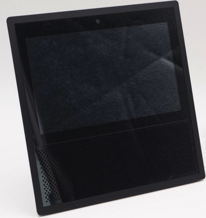 | 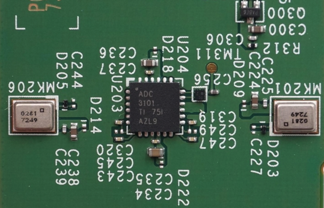 | TI ADC3101 x 4ADC 3101 TI 751 AZL9 |
| 天猫精灵魔盒 | 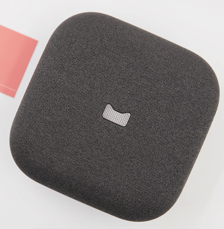 | 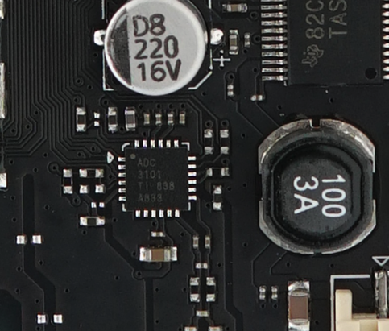 | TI ADC3101 x 2ADC 3101 TI 838 A833 |
| 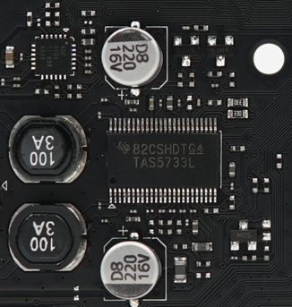 | TI德州仪器 TAS5733L |
||
| 天猫精灵方糖智能音箱 | 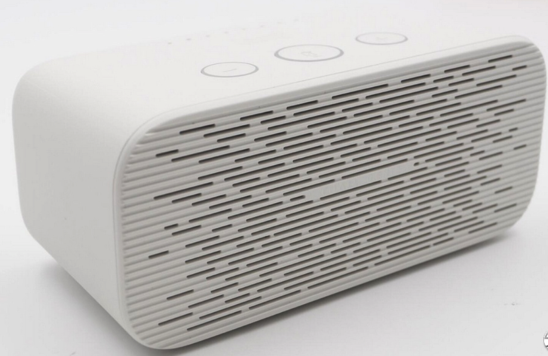 | 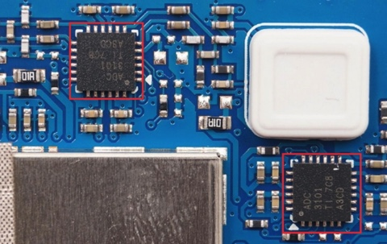 | TI ADC3101 x 2ADC 3101 TI 7C8 A3CD |
| 天猫精灵TG_X1智能音箱 | 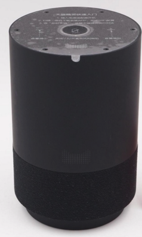 | 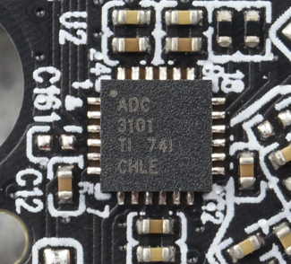 | TI ADC3101 x 1 ?ADC 3101 TI 741 CHLE |
| 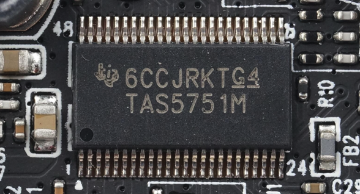 | TI TAS5751M6CCJKRTG4 TAS5751M |
||
| 天猫精灵M1智能音箱 |  |
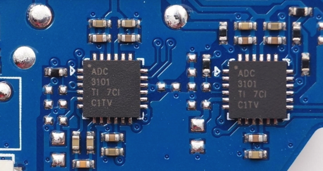 | TI ADC3101 x 2ADC 3101 TI 7CI C1TV |
| 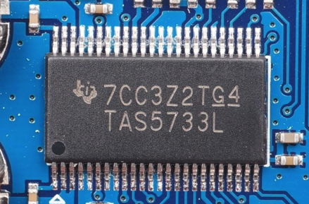 | TI TAS5733L7CC3Z2TG4 TAS5733L |
||
| 腾讯听听智能音箱 | 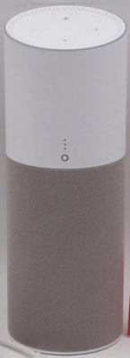 | 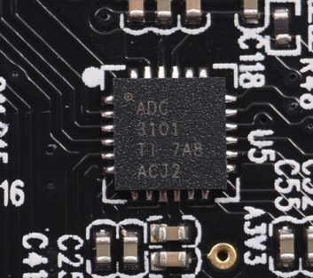 | TI ADC3101 |
| 小度在家智能视频音箱 | 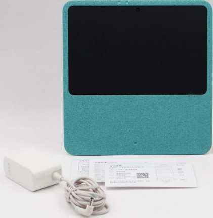 | 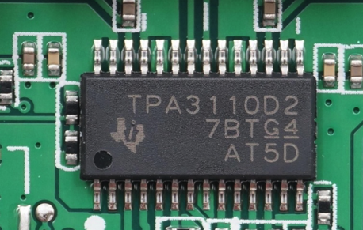 | TPA3110D2 TPA3110D2 7BTG4 AT5D |
| 小米小爱AI音箱 | 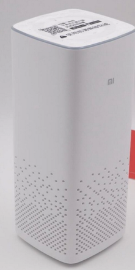 | 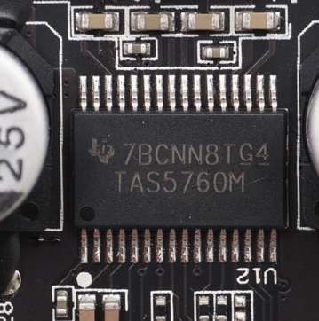 | TI TAS5760M 7BCNN8TG4 TAS5760M |
音频芯片介绍
| 芯片名 | 厂家 | 功能介绍 | 备注说明 |
|---|---|---|---|
| ADC3101 ADC | TI德州仪器 |
|
处理麦克风收集到的音频信号 |
| TAS5733L 数字音频功率放大器 | TI德州仪器 |
|
多用于智能电视等设备 |
| TAS5751M 数字音频功率放大器 | TI德州仪器 |
|
|
| TPA3110D2 数字功放 | TI德州仪器 |
|
|
| TAS5760M | TI德州仪器 |
|
适合多种场合 |